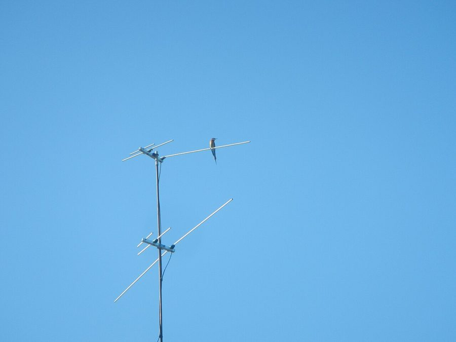

बड़ा पतरिंगाBlue-tailed Bee-eater
Merops philippinus · Meropidae · BRD-0107

- Scientific name वैज्ञानिक नाम
- Merops philippinus Molina, 1782
- Family कुल
- Meropidae
- Hindi हिंदी
- बड़ा पतरिंगा
- Local names स्थानीय नाम
- bada patringa, bada patrenga, patringa, patrenga, bee eater
- Status here यहाँ की स्थिति
- native
- Movement आवागमन
- Summer visitor
- IUCN IUCN
- LC
- Review समीक्षा
- audited and independently read
When to look कब देखें
Summer visitor ग्रीष्मकालीन प्रवासी. Expected mainly in March, April, May, June, July, August, September, October. मुख्यतः मार्च, अप्रैल, मई, जून, जुलाई, अगस्त, सितंबर, अक्टूबर में अपेक्षित।
Arrives in spring (March-April); departs in autumn (September-October). Breeds across much of its range. All migrants and visitors →
Tell it apart from इनसे अलग पहचानें
बड़ा पतरिंगा / Blue-tailed Bee-eater
Merops philippinus Molina, 1782 — Meropidae
बड़ा पतरिंगा — वसंत ऋतु में भारत में आने वाली एक रंगीन चिड़िया है जिसके पंख नीले, हरे और सोने के रंग के होते हैं। यह पतली, लंबी पूँछ के लिए जानी जाती है। यह शहद की मक्खियों और ततैयों को हवा में पकड़ता है। घास के मैदानों, खेतों और नदी के किनारों पर यह चिड़िया झुंडों में देखी जाती है। बसंत का आने का संकेत इसकी आगमन है।
Quick Identification त्वरित पहचान
| Feature | Description |
|---|---|
| Size | Medium bee-eater (33–43 cm including tail); slender and elegant |
| Plumage | Multicoloured: head and back olive-green; chest yellow-buff; abdomen whitish; wings blue and turquoise |
| Head | Olive-green with greenish throat; no pronounced facial mask |
| Back and wings | Olive-green on back; wings blue and turquoise with black flight feathers |
| Tail | Distinctive: blue-green with elongated central feathers, creating elegant streamers |
| Underparts | Yellowish-buff on breast; whitish belly |
| Eyes | Dark; small red orbital ring (breeding birds) |
| Bill | Long, pointed, slightly downcurved; partly red in breeding plumage |
| Behaviour | Aerial specialist; catches insects on the wing; gregarious; often calls while flying |
Field tip: Watch for small flocks hawking insects over grasslands and water courses during spring and summer. Distinctive elongated tail streamers are visible even in flight. Look for the chattering calls given during aerial pursuits. Often perches on wires or dead branches to scan for flying insects.
Morphology आकारिकी
Biometrics (nominate subspecies philippinus, Asian populations including eastern UP):
| Measurement | Range |
|---|---|
| Total length | 330–430 mm (including tail streamers) |
| Wing (flattened chord) | 165–190 mm |
| Tail | 160–210 mm (including central feather extensions) |
| Tarsus | 10–12 mm |
| Bill (culmen from base) | 25–30 mm |
| Weight | 25–40 g |
Plumage: Crown and back olive-green or yellowish-green. Lores and area around eye greenish. Chin and throat greenish-yellow or buff. Breast and upper abdomen yellowish-buff or orange-buff. Lower abdomen and undertail coverts white or cream. Back olive-green. Wings predominantly blue, turquoise, and greener on coverts; flight feathers blue-black. Tail distinctive: central feathers elongated (forming streamers), blue-green; other feathers also blue-green but shorter.
Bare parts: Eyes dark brown; orbital ring red or orange (breeding birds). Bill mostly reddish or orange (breeding) to pale yellow-horn (non-breeding); long and slightly downcurved. Legs and feet reddish or orange (breeding) to pale (non-breeding).
Sexes: Males have longer tail streamers and more vivid colouration than females; females duller overall with shorter tail streamers.
Juveniles: Duller than adults; tail streamers very short or absent; colours muted.
Vocalisations
Blue-tailed Bee-eater is vocal, especially in flight and during breeding season.
- Flight call: A loud, rolling "krrrip" or "krrr-ip," delivered frequently during aerial pursuits and while flying overhead. Often given in rapid series during group activity.
- Contact call: Shorter, softer "kip" or "chip" between flock members.
- Breeding call: Males may produce softer, melodious whistles or trills during display flights.
Behaviour & Ecology व्यवहार और पारिस्थितिकी
Aerial insectivore specialist: Blue-tailed Bee-eater is a highly specialized predator of flying insects, particularly bees and wasps. Hunts by actively hawking, flying out from a perch or directly from the air, catching prey on the wing with great manoeuvrability.
Bee and wasp specialist: Primary diet consists of bees (honeybees and wild bees), wasps, and other flying insects. Bees may constitute 30–50% of diet. Has evolved resistance to bee and wasp stings, and can extract the stinger and acid gland before consuming.
Gregarious: Often seen in small flocks, particularly during migration and outside breeding season. Flocks hunt cooperatively, herding insects and taking turns attacking groups.
Migratory: A long-distance migrant, breeding in India and wintering in Southeast Asia and Australia. Timing of arrival and departure is synchronised with insect availability.
Breeding and nesting: Digs burrows in sandy banks of rivers or excavations, often in colonies. A burrow is 0.5–1 m deep with a chamber at the end. Pairs are monogamous during breeding season.
Life Cycle / Phenology जीवन चक्र
- March–April: Arrival in India; movement to breeding grounds; pairs establish territories
- April–May: Nest burrow excavation and preparation; egg-laying
- May–June: Incubation (21–25 days); males feed incubating females
- June–July: Chicks hatch; intensive feeding period (35–45 days fledging)
- July–August: Chicks fledge; juveniles learn to hunt; some second broods
- August–September: Pre-departure; flocks gather; less breeding activity
- September–October: Departure for wintering grounds
Host Plants or Prey आहार
Specialised insectivore:
- Honeybees (Apis spp.)
- Wild bees and solitary bees
- Wasps (hornets, paper wasps)
- Flying termites (alates)
- Dragonflies and damselflies (occasionally)
- Small flying insects (flies, etc.)
Predators / Natural Enemies शत्रु
- Besra (Accipiter virgatus) and other small falcons — hunt in flight
- Peregrine Falcon (Falco peregrinus) — hunts while on passage
- Snakes — may raid burrow nests
- Mongooses and monitor lizards — excavate burrows
Agricultural / Human Relevance कृषि प्रासंगिकता
Insect control and ecosystem services: By hunting flying insects including agricultural pests and disease vectors, Blue-tailed Bee-eater provides valuable ecosystem services. However, as a specialist bee-eater, its impact on honeybee and bumblebee populations may be significant in areas with managed hives.
Honey production and bee-keeper relations: In areas with managed honeybees, bee-eaters may take a significant number of foraging bees, reducing hive productivity. Traditional knowledge from beekeeping communities indicates that bee-eater populations and human beekeeping have coexisted historically, with traditional measures to minimize conflict (hive placement, timing of bee release).
Protected status: Schedule IV of the Wildlife (Protection) Act, 1972 (India). The species is legally protected throughout the country.
Expected Locally स्थानीय रूप से अपेक्षित
Not a field record. Written from published accounts for eastern Uttar Pradesh. No confirmed local sighting yet — if you have seen it, that is what the atlas needs.
अभी तक स्थानीय पुष्टि नहीं। यह विवरण प्रकाशित स्रोतों से है, किसी अवलोकन से नहीं।
Blue-tailed Bee-eater is expected as a summer visitor (March-October) in Basti and Ayodhya districts, particularly in open grasslands, river valleys, and cultivated areas. Watch for small flocks hawking insects over open country, especially along water courses and near sandy banks suitable for nesting burrows. Listen for the loud "krrrip" call during flight. Peak activity is April to July.
Distribution वितरण
Global range: Breeds across India, Myanmar, Thailand, and adjacent regions; winters in Australia, Indonesia, and other Southeast Asian regions. Highly migratory with distinct breeding and non-breeding distributions.
In India: Summer breeding visitor across most of the mainland, particularly in areas with open grasslands and river systems.
In Uttar Pradesh: Summer visitor to districts with suitable river valleys and open cultivated areas.
In Basti district / eastern UP: Expected as a summer visitor, particularly along the Ghaghra river system and in open agricultural areas.
Research Questions शोध प्रश्न
- When do the first Blue-tailed Bee-eaters arrive in your area each year? / पतरिंगा कब आते हैं? — Record exact arrival date; look for them in open grasslands near water.
- Where do they breed and nest in Basti/Ayodhya? / कहाँ घोंसले बनाते हैं? — Search for burrow colonies in sandy banks of rivers and streams.
- What percentage of bee diet consists of honeybees vs. wild bees? / कितनी मधुमक्खियाँ खाते हैं? — Collect regurgitated pellets or faecal matter; dissect and identify bee species (requires reference collection).
- How do local beekeepers manage populations, and what traditional knowledge exists about coexistence? — Interview beekeepers and document local practices.
- Do arrival dates correlate with emergence of flying insects or monsoon onset? / कीड़ों की संख्या से कैसे जुड़ा है? — Compare phenological records with insect emergence (no equipment needed).
Similar Species मिलती-जुलती प्रजातियाँ
| Species | How to tell apart | हिंदी |
|---|---|---|
| Green Bee-eater (Merops orientalis) — if present | Smaller; shorter tail (no streamers); greener overall; different call | छोटा पतरिंगा — हरा, छोटी पूँछ |
| Small Green Bee-eater (Merops viridis) — if present | Smaller; no blue on wings; throat pattern different | और भी छोटा — सब हरा |
| Kingfisher species — if confused | Differ in body shape, bill, and habitat preference (usually water edge) | मछली पकड़ने वाली चिड़िया — जल के किनारे |
Field rule: Small, multicoloured flyer (green, yellow, blue) + long tail streamers + loud "krrrip" call in flight + aerial insect hunting + spring arrival = Blue-tailed Bee-eater. The elongated tail streamers are diagnostic.
Taxonomy & Classification वर्गीकरण
Original description. This species was first described as Merops philippinus by José Ignacio Molina in 1782, with type locality in the Philippines (though the species also occurs in India and other Asian regions).
Subspecies. Three subspecies recognised; M. p. philippinus is the nominate form and occurs across India, Myanmar, Thailand, and parts of Southeast Asia.
Family and order placement. Order Coraciiformes; family Meropidae (bee-eaters). Meropidae is a Old World family of about 30 species, all specialists in capturing and eating flying insects.
Phylogenetic notes. Molecular studies place Merops within Meropidae as part of a clade of Asian bee-eaters, distinct from African and European forms.
IUCN status rationale. Assessed as Least Concern (LC). The species is widespread, maintains stable populations, and shows flexibility in habitat use across its breeding range.
Photo Gallery फोटो गैलरी
No photos yet — add field photos to media/species/blue_tailed_bee_eater/ and run node scripts/sync_photos.js.
Photos needed आवश्यक फोटो
- [ ] Perched adult showing multicoloured plumage and tail streamers (पूँछ की लंबाई)
- [ ] In flight showing blue wings and long tail (उड़ते समय)
- [ ] Catching insect in flight (कीड़ा पकड़ते हुए)
- [ ] Group of birds hunting together (झुंड में)
- [ ] At burrow entrance (घोंसले के पास)
References संदर्भ
- Molina, J.I. (1782). Saggio sulla storia naturale del Chili. Bologna.
- Ali, S. & Ripley, S.D. (1987). Handbook of the Birds of India and Pakistan. Vol. 3. Oxford University Press, New Delhi.
- Grimmett, R., Inskipp, C. & Inskipp, T. (2011). Birds of the Indian Subcontinent. 2nd ed. Christopher Helm, London.
- Rasmussen, P.C. & Anderton, J.C. (2005). Birds of South Asia: The Ripley Guide. Smithsonian Institution, Washington DC.
- Fry, C.H. (2001). Family Meropidae (Bee-eaters). In: Handbook of the Birds of the World. Vol. 6. Lynx Edicions, Barcelona.
- BirdLife International (2024). Merops philippinus. IUCN Red List of Threatened Species. Ver. 2024.
- GBIF Occurrence Data — Merops philippinus, Uttar Pradesh (2010–2025).
Source file: species/fauna/birds/blue_tailed_bee_eater.md